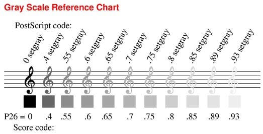
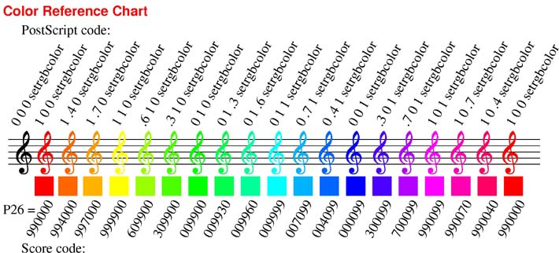
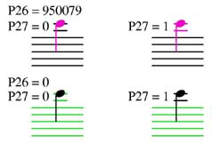

Color/Gray Control -- P25, P26, P27 |
P26 controls the color or gray scale of any Score item.
Gray scale values are from 0 (black) to 1 (white).

Typing GRA .4, etc. will set P26 values.
Color is created by the PostScript "setrgbcolor" code. (rgb = red, green, blue)
For color, P26 must be a six-digit number, aabbcc, where aa = red, bb = green,
cc = blue. Thus if P26 = 669975, the color values are 66% red, 100% green,
75% blue and the generated PostScript code would be ".66 1 .75 setrgbcolor."
Each component represents a color percentage. 99 is interpreted as 100%.
Typing "RGB n" is the same as typing "26 n."
If RGB alone is typed, or the color button is clicked on, then the Windows "Color
Chooser" will appear. After a color is chosen, the P26 value will appear at the
top of the screen for reference.
Usually when an item (black) is being edited it will be changed to red.
However if P26 is not zero, the indicated color will remain.
This is so that any color changes that might be made will be immediately visible.
Typing "BLA" (black, p26 = 0) will return an item to normal.
"WHI" (white, p26 = 1) creates a white item. (However on the screen
it will show as very light gray, so that you will know of its presence.)

P25 - PostScript applies items in "layers," thus the order in which items are printed is very important. For example, if colored or gray notes are to appear on black staff lines, it is essential that the staff lines be printed first. P25 can set a layer number. After the essential items have their layer numbers, "ORN" must be typed. ORN stands for Order and ReNumber. All items with P25 = 1 will be printed LAST, items with P25 = 2 will be printed NEXT TO LAST, etc. Up to 10 layer numbers may be used. Items may have P25 set by individual editing. Or the alter command, "A", or the "IF" command may be used for groups of items. The following could be used to set all the notes on staff 2 to the color red and ensure they will print on top of staff lines. For gray notes, set P26=.65, etc.
IF P1=1 AND P2=2 THEN P25=1, P26=990000
ORN
Please note that some of SCORE's group edit commands automatically renumber all items (OS = order by staff number). If the layer feature is used, the ORN command should be given before printing.
P27 is used with notes that require ledger lines. Normally (P27 = 0) the ledger lines take the same color as the staff lines. If P27 = 1, the ledger lines will be the same color as the note.
